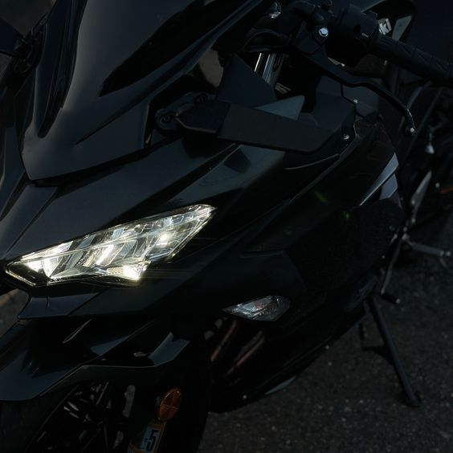

OVERVIEW
The Ninja® 400 sportbike offers the largest displacement in category at 399cc with the sophistication of twin-cylinder power. Approachable power, superb ergonomics and class-leading performance offer a smooth, manageable ride that's ideal for new riders while also alluring experienced riders. A low seat height and aggressive styling with LED headlights make the Ninja 400 the ideal choice for riders looking to enter the sport-riding scene.

Characteristics
Engine
The Ninja 400 motorcycle is equipped with a powerful liquid-cooled four-stroke engine with a parallel cylinder layout. The compression ratio is 11.5:1, which delivers outstanding performance. The engine features a DOHC system with eight valves, and its bore and stroke measurements are 70.0 x 51.8 mm. With an engine displacement of 399 cm³, it provides ample power for dynamic riding. The fuel injection system utilizes two 32 mm diameter injectors, optimizing fuel consumption and enhancing efficiency. Additionally, the motorcycle is equipped with an electric starter and a digital ignition system, making it convenient and reliable to operate.
×
Transmission
The Ninja 400 offers a dynamic and reliable transmission with a 6-speed gearbox featuring a return shifter. The engine's maximum power reaches 33.4 kW (45 PS) at 10,000 RPM, while the maximum torque is 37 Nm at 8,000 RPM, ensuring excellent acceleration and responsiveness. The motorcycle demonstrates economical fuel consumption—only 3.9 liters per 100 km—and has a CO2 emission level of 91 g/km, making it a more environmentally friendly choice. The clutch system includes wet multi-disc components, providing smooth and reliable gear shifting. The primary reduction ratio is 2.219, which, combined with individual gear ratios (such as 1st gear at 2.929), allows for efficient use of engine power and ensures quality riding characteristics. A reliable sealed chain transmits power to the rear wheel.
×
Frame
The Ninja 400 is equipped with a sturdy Trellis frame made of high-strength steel, providing an optimal balance of rigidity and lightweight construction. The front suspension offers 120 mm of wheel travel, while the rear provides 130 mm, contributing to a comfortable and stable ride. The wheel diameter is 17 inches, with the front tire sized at 110/70R17 and the rear tire at 150/60R17, ensuring excellent road grip. The motorcycle's dimensions are 1,990 mm in length, 710 mm in width, and 1,120 mm in height, making it compact enough for urban use. With a wheelbase of 1,370 mm and a ground clearance of 140 mm, it enhances maneuverability and versatility. The fuel tank has a capacity of 14 liters, allowing for longer rides without frequent refueling. The seat height is 785 mm, and the curb weight of the motorcycle is 168 kg, making it a comfortable and manageable vehicle.
×
Brake
The Ninja 400 features efficient braking systems that ensure safety and control in all conditions. It is equipped with a single semi-floating disc brake at the front, measuring 310 mm in diameter, paired with a two-piston caliper, providing excellent braking force and quick response. The rear brake consists of a single 220 mm disc with a similar two-piston caliper, ensuring reliable stopping power. The front suspension is fitted with a 41 mm telescopic fork, enhancing stability during braking and maneuvering. The rear suspension features a Bottom-link Uni-Trak system, which combines gas shock absorbers with adjustable spring preload. This improves the comfort and handling of the motorcycle, allowing it to adapt to various road conditions. All these characteristics make the Ninja 400 an excellent choice for both urban riding and more aggressive riding styles.
×
About
It all started in a shipyard in 1878, with Shozo Kawasaki
Today, KAWASAKI HEAVY INDUSTRIES is a large, global organization that operates in many markets and is always at the forefront of cutting-edge technologies.
The production of complete motorcycles began more than 50 years ago. Our very first engine was designed based on the technical knowledge gained from the development and design of aircraft engines.
We started producing motorcycles with one fixed goal in mind: to develop new techniques. Over the years, we have introduced a large number of models that changed the entire motorcycle world. At the same time, we made legendary motorcycles, many of which are still etched in everyone's memory, mainly because of the (at the time) astonishing power and unprecedented speed. In 1996, we passed the 10 million engine mark, a testament to our diverse range and an encouragement to continue developing legendary engines.
I also have a Kawasaki!
Space travel
Shipbuilding
Rolling stock
Power plants and companies
Environment & Recycling
Industrial Mechanical Engineering
Infrastructure
Leisure & Power Products